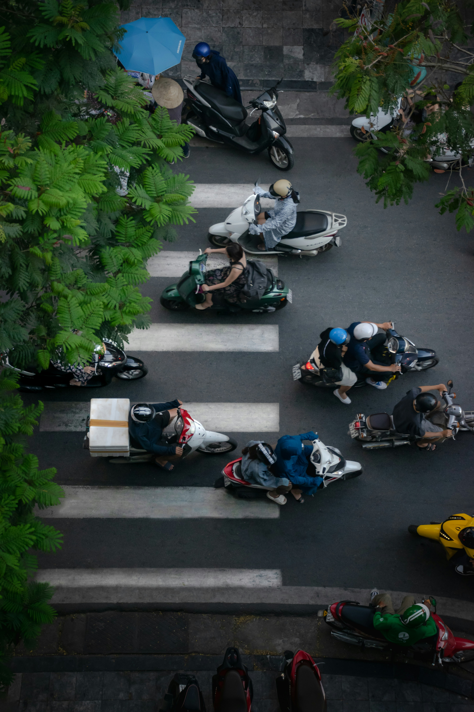
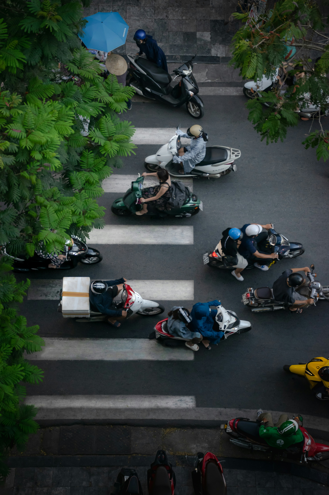

Vietnam’s Motorbike Culture
"The easiest way I use to explain Vietnam’s traffic rules to foreigners is: “Vietnamese people move like fish.” Fish don’t stop when they meet each other — they just swerve aside. Vietnamese people are the same; they won’t stop just because they see you crossing the street, but they’ll find a way to keep moving forward without hitting you, like two fish gliding past each other. What you need to do is show them where you’re planning to 'swim.' Don’t hesitate or jerk around in the middle of the road — you’ll just confuse the other fish."
(Source: chuyencuahanoi.official, Threads).
Motorbikes have long been the lifeblood of Vietnam’s streets, weaving through alleys, bridges, and boulevards with unmatched rhythm. Motorbikes are deeply tied to everyday life in Vietnam, serving as the main form of transportation for most families. They represent more than just transportation — they are part of the nation’s identity and evolution. Today’s modern cities, the motorbike has witnessed Vietnam’s growth, carrying generations of stories and dreams.
 
